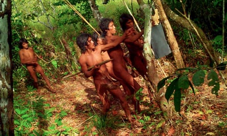
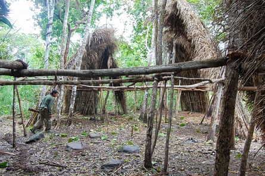
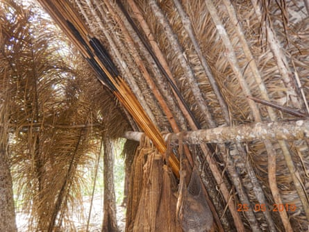
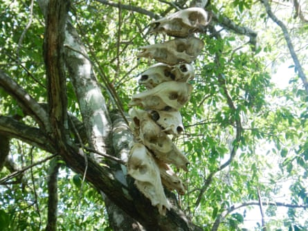
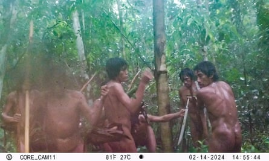
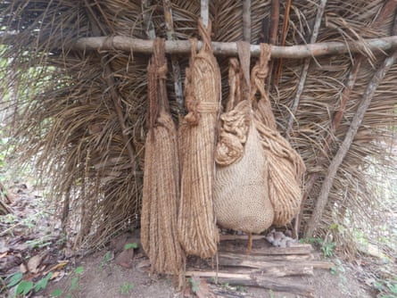
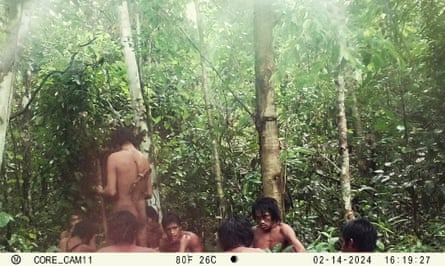

I n one of Brazil’s most deforested Amazonian states, Rondônia, an isolated community is thriving. They are experts at hunting with long bows and at protecting their land from unwanted visitors with traps of hidden hardwood spikes so sturdy they can take out a tractor tyre. These spikes that hobbled a vehicle driven by a team from Brazil’s National Indigenous Peoples Foundation (Funai) earlier this year – and ended its mission in the Massaco Indigenous territory.
No one knows what they call themselves, the Massaco is the name given to them after the river that runs through their domain near Brazil’s border with Bolivia. The Massaco are one of the 28 isolated communities confirmed to be in Brazil. Another 85 have been reported but have not yet been confirmed through the rigorous evidence-gathering and bureaucratic hurdles required.
The spikes have been found with increasing frequency and ever closer to the base from which Funai veteran Altair Algayer oversees the protection of this 421,000-hectare (1.04m-acre) territory. They would seem to send a message: stay out.
It was Algayer who placed cameras in the rainforest in an attempt to better quantify the population without risking contact. The images, taken in 2019 and 2024, and published for the first time by the Guardian and the Brazilian newspaper O Globo, gave Algayer his first look at people he has been protecting for most of his career. It is also vital proof of the Massaco’s existence that will allow Funai to continue its work.
This image from February 2019 show a group of young Massaco people collecting tools left by Funai.Photograph: Funai
It has become clear from the images and from years of monitoring expeditions led by Algayer that the Massaco river people are becoming more numerous, a trend apparent among many uncontacted communities in the Amazon. For the Massaco, this is a marked change in fortune since the 1980s, when their land was filled with loggers and rubber tappers. At that time, Funai’s mandate was to attempt peaceful contact with Indigenous peoples who stood in the way of highways, new settlements and resource extraction. In 1987, agents prepared to make contact by luring people along a trail of customary gifts of tools, metal pots, utensils and mirrors.
However, also in 1987, Funai’s specialists in Brasília concluded that the disease and misery resulting from peaceful contact were catastrophic for isolated peoples and instituted the agency’s current no-contact policy. Massaco – the first territory in Brazil that was protected exclusively for uncontacted populations – became an experiment in locating and monitoring an isolated community without making contact.
Algayer began working in Massaco in 1992. Known as Alemão (the German, after his ancestry), he has become a legend within Funai for his systematic documentation of the Massaco people and his dogged protection of their land.
The territory has become a model. Funai and federal agencies have driven deforestation to zero within its boundaries in a region where forest loss is rampant.
Algayer says that in the early 90s he estimated a population of 100 to 120 people. Now, he estimates 50 families, each with four to five members, putting the total number of inhabitants at 200-250. Tiny bows, toys and small footprints indicate children – signs that families are growing.
Temporary shelters made from babassu palms can be up to five meters tall and are used while the Massaco are hunting and gathering in the forest.Photograph: Funai
“On our most recent expeditions and in satellite images, we’ve seen more new tapiris [thatched huts], so I wouldn’t be surprised if there are 300 individuals,” he says.
Over the years, his team has mapped 174 tapiris , photographed thousands of artefacts, created maps of the Massaco’s trails, and learned about their seasonal movements so that Funai can arrive in a location just weeks after the families have left. They learned that the Massaco burn areas of natural savanna at the beginning of the rainy season and then move there when they are freshly sprouting.
“By locating the hotspots recorded in satellite images in July and August, we know in advance … where they will settle to spend the next rainy season, from December to April,” says Algayer.
It is common to find bows and arrows in abandoned shelters. The stout bows are between 2.9 and 3.2 metres in length; the arrows are nearly as long. The points are made from sharpened bamboo tied using tucum pallm fibres.Photograph: undefined/Funai
The bows and arrows found at abandoned Massaco camps can exceed three metres, among the longest ever encountered in the Amazon.
“How they shoot the arrow, we have no idea. Other Indigenous people also try to understand, laugh and say it’s impossible. Perhaps lying down, they say, but to this day, we have no answer to this mystery,” Algayer says.
Anthropologist Amanda Villa, of the Observatory of the Human Rights of Isolated and Recently Contacted Indigenous Peoples, has joined Algayer on expeditions and talked to neighbouring communities. She says the Massaco are distinguished from neighbouring peoples not just by the long bows but also tall tapiris , extensive use of spikes, placement of animal skulls on poles, long hair, moustaches, and lack of piercings or jewellery. One Tupari Indian who knows several of the region’s Indigenous languages overheard a Massaco couple chatting and reported not understanding a word.
“That’s why many Funai experts suspect they came from the other side of the Guaporé River, from Bolivia,” Villa says. The Sirionó people, in particular, used similar bows, tapiri construction and grooming. “But these are guesses. We can’t say anything for sure.”
Animal skulls are stacked on branches in displays that puzzle Funai experts. They may be trophies or offerings; no one knows their significance for the Massaco.Photograph: Funai
The new images were taken at a spot where Funai has periodically left metal tools, machetes and axes. The gifts, once used to lure people into contact, are now employed to avert it. The practice, employed in other Indigenous territories, dissuades uncontacted people from going to farms or logging camps to acquire tools.
Analysing the images, Algayer points to the apparent leader of the group.
“The oldest one holding the stick has the spike under his arm. The stick he holds serves as a staff, but it is used more for drilling holes in the ground to place the spikes. He has this leadership posture, helps to place the spikes, and tells where to place them,” says Algayer.
Machetes left as a gift by Funai are handed out among young Massaco people.Photograph: Funai
There are three men aged between 30 and 40, with moustaches and longer hair, but the others are younger. “They are vigorous, strong. They are not going hungry,” he says.
Before these images, only one Funai agent had seen the Massaco. In 2014, Paulo Pereira da Silva, 64, one of Algayer’s staff, was making coffee at around 2pm when he heard knocking outside. “I went into the office and looked out the window, which has a protective screen, and I saw two people at the foot of the stairs. I froze,” he recalls.
Naked and without arrows, the two men were placing spikes in front of the stairs. “An older man was making holes with a stake made of aroeira wood and a young boy was arranging the spikes,” Pereira says.
Pereira shouted at the pair. The older one stared at him and the younger one ran, leaving the spikes on the ground. Six other individuals came forward and they planted a trail of spikes for at least two kilometres.
Hammocks made from tucum fibres made into thick ropes that are between 1.8 and 2 metres long, found intapiris. The hammocks are large enough to fit two people.Photograph: Funai
Other isolated peoples with sufficiently large, effectively protected forests mirror the Massaco’s population growth. On a July expedition in the Rio Pardo Kawahiva territory in neighbouring Mato Grosso state, Funai experts found evidence of a people they estimate has doubled in size in 25 years.
A 2023 report in the science journal Nature analysed satellite images showing that uncontacted people in the western Brazilian state of Acre expanded their crops by 17% each year from 2015-2022. The same study registered the growth of the uncontacted Moxihatëtëa, a subgroup of the larger Yanomami people, in northern Amazon. The Moxihatëtëa lean huge rectangular thatch panels in a ring. Each panel shelters a family. In the late 2010s, their new village had an enlarged ring, from 16 to 17 panels. In 2020, they moved again, this time erecting two rings with a total of 23 panels.
Similar growth was seen in the Javari valley after its demarcation as Indigenous land in 2001. The 8.5m-hectare (21m-acre) wilderness that borders Peru has 16 isolated peoples – 10 confirmed – the most of any territory in Brazil.
Beto Marubo, a representative of the Union of Indigenous Peoples of the Javari Valley and Brazil’s leading native advocate for isolated tribes, says that before the Javari territory was demarcated, people were dying. “Their longhouses were tiny, there were loggers everywhere, there were drug traffickers, every kind of bad actor,” he says. “The Javari was a no man’s land.”
After demarcation and firm enforcement, Indigenous communities started cultivating the land, he says. “They weren’t getting malaria any more. Today, you will see a new trend in Javari. There are places we had no clue isolated people might go, and now they are showing up.”
In this image it is thought that the man leaning against the tree has a position of prominence and leadership over the group.Photograph: Funai
Such successes raise a new problem: their areas may soon not be big enough.
“The growth of isolated peoples is undoubtedly wonderful news, but on the other hand, it alerts us to the imminent risk of contact, not only because it could lead to a need for more land, but also because of climate change,” Algayer says. “If the isolated peoples run out of water in their streams, they will go closer to other populations.”
Janete Carvalho, Funai’s territorial protection director, echoes these concerns. “We will face this at some point. Nobody knows what this will lead to because, in principle, there’s a real chance that contact will happen,” she says. “Of course, we don’t want that.”
This piece is published in conjunction with O Globo. John Reid is the co-author of Ever Green: Saving Big Forests to Save the Planet. Daniel Biasetto is the content editor at the Brazilian daily O Globo. They were supported on this series by a grant from the Ford Foundation .